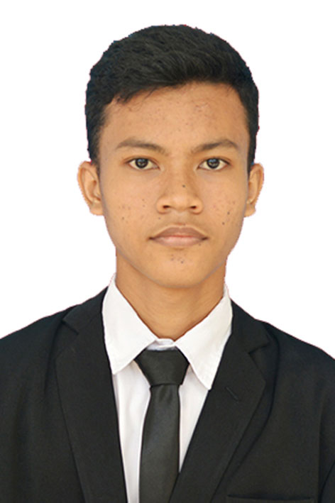

CURRICULUM VITAE |
|

|
Ikhsannudin Lathief
122140137
Kelompok 03
|
About Me
Saya merupakan mahasiswa aktif di Institut Teknologi Sumatera program studi teknik informatika angkatan 2022. Saya mampu beradaptasi di lingkungan baru, memiliki minat tinggi untuk mempelajari hal baru, dan mampu bekerja sama baik secara tim atau individu.
|
Pendidikan
-
Institut Teknologi Sumatera
2022-Sekarang
-
SMKN 1 Gedong Tataan
2018-2020
|
Biodata Diri
- Nama : Ikhsannudin Lathief
- NIM : 122140137
- TTL : Taman Sari, 16 Desember 2002
- Jenis Kelamin : Pria
- Agama : Islam
- Umur : 20 Tahun
|
Pengalaman
-
PKL di PT.Garudaku.co.id (2019)
Membuat program CRUD menggunakan bahasa PHP.
-
Pra-PON Cabor Petanque (2023)
Menjadi atlet untuk cabor Petanque di Pra-PON Bali 2023.
|
Kontak
|